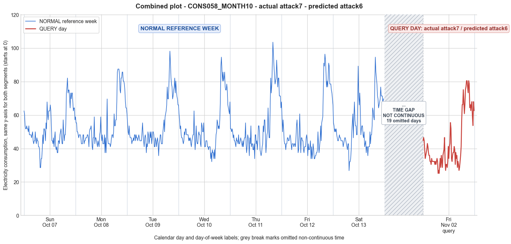

CONS058_MONTH10 · actual attack7 · predicted attack6
- Pair
- CONS058_MONTH10
- GT
- attack7
- Prediction
- attack6
- Binary GT
- attacked
- Binary Prediction
- attacked
- Source
- E010
- Parse
- stored
- Date
- 2012-11-02
- Weekday
- Friday
- Latency
- 3.91 min
- Tokens
- 14640

Final output
Classification: Manipulated Identified Attack: - Most Likely: Attack 6 - Confidence: Medium - Reasoning: The query day exhibits a distinctive plateau at 80.51 (repeated 3–4 times during the evening peak), with no readings above this value despite the reference week showing normal peaks up to 96.43 on the same weekday. This is a textbook sign of a cut‑off attack where any consumption above a chosen threshold is replaced by that threshold. Attack 1 (constant scaling) was ruled out because it would preserve the original shape without a strict cap and scaled values would not produce multiple identical peaks. Attack 7 (subtraction with zero‑floor) was also considered but would create zeros for low values, which are absent. Attack_Behavior_Explanation: - How consumption values are manipulated relative to the normal week: A cut‑off point (approximately 80.51) is selected. Every 15‑minute consumption reading that exceeds this limit is replaced by 80.51. Lower readings are left unchanged, preserving the overall daily pattern but capping the highest usage. - Impact on magnitude and trend: The overall energy magnitude is reduced, especially during high‑consumption periods like the evening peak. The consumption trend remains intact for normal and low periods, but the peak is flattened, creating an unnatural flat top at the cut‑off value. - Possible technical causes: False data injection is the primary cause, where an adversary modifies the reported data to hide excessive consumption by enforcing an artificial maximum limit.
Prompt
You are a domain expert in smart grid security and electricity theft analysis, with deep knowledge of non-technical loss (NTL) attack patterns in smart meters. You are given: 1. A plot of one week of original (normal) energy consumption for a smart meter, provided as context for the customer's typical consumption behavior. 2. A plot of one day of energy consumption for the same smart meter, which may or may not be manipulated. Below are common attack types, each defined by how consumption values are altered, their impact on magnitude and trend, and their possible technical causes. Attack 0: Generated by replacing all electricity consumption samples with zero values for the entire observation duration. Simulates a scenario where no energy usage is reported at all. May be caused by a total meter bypass or severe meter malfunction. Completely eliminates both the trend and magnitude of the consumption profile. Attack 1: Multiplies the actual energy consumption by a constant random value between (0,1). The lower the factor, the higher the severity. Can be triggered by meter bypass, magnetic interference, reverse current, and false data injection. The consumption trend remains the same but the magnitude is uniformly reduced. Attack 2: Generated by replacing consumption samples with zeros for a random duration. Also known as an on-off attack. Can be caused by full meter bypass, false data injection, and reverse current. Changes both the trend and amplitude. Attack 3: The actual consumption is multiplied by different random factors between 0 and 1, with a unique factor per sample. Similar to Attack 1 but the scaling factor varies per reading. Caused by meter bypass, magnetic interference, and reverse current. Changes both the trend and amplitude. Attack 4: Simulates energy theft over a randomly selected period within the observation window. All measurements in that period are reduced. Caused by meter bypass, magnetic interference, reverse current, and false data injection. Changes both the trend and amplitude. Attack 5: Each sample is replaced by a false value obtained by multiplying the average normal consumption by a random variable between 0 and 1, with a different variable per sample. Caused by false data injection. Produces a completely different pattern from the original consumption profile, changing both trend and magnitude. Attack 6: A random cut-off point is selected and all consumption values above it are replaced by that cut-off value. The attacker avoids exceeding a predefined maximum limit. Mainly caused by false data injection. Changes both the trend and amplitude. Attack 7: A random cut-off point is subtracted from each sample; if the result is negative, zero is reported. Similar to Attack 6 but replaces exceeding values with zero instead of the cut-off point. May be caused by false data injection or total meter bypass. Does not change the trend but reduces overall consumption. Attack 9: All samples are replaced by the average daily energy consumption, resulting in a flat constant profile. Easily detectable because constant consumption does not reflect normal customer behavior. Caused by false data injection. Eliminates all trends. Attack 10: Reverses the consumption pattern without reducing the total amount. Applicable when the electricity company uses time-varying pricing, allowing the attacker to shift high consumption to off-peak periods. Caused by false data injection. Changes the trend without decreasing total consumption. Attack 12: The attacker replaces their consumption pattern with that of a lower-consuming user. The legitimate user unknowingly pays the adversary's electricity bill. Caused by false data injection. Attack IEEE: For each 15-minute interval across the entire day, the consumer either reports the actual electricity consumption or substitutes it with zero. The result is a profile where some intervals reflect real consumption while others are zeroed out, creating an irregular pattern across the full day. May be caused by false data injection. Changes both the trend and amplitude. Given the two plots, determine: 1. Whether the day is attacked or original - compare the flagged day against the normal week and assess whether the consumption pattern is consistent with normal behavior or shows signs of manipulation. If the day is consistent with the customer's typical consumption behavior, classify it as original and provide no further analysis. If manipulation is detected, proceed to point 2. 2. Which attack type this most likely is - identify the single most probable attack and justify your choice based on how the flagged day deviates from the normal week. 3. The behavior of the identified attack - explain how the consumption values are manipulated, their impact on magnitude and trend, and the possible technical causes behind this type of attack. Output Format: Classification: - Original | Manipulated Identified Attack: (fill only if manipulated) - Most Likely: Attack X - Confidence: High | Medium | Low - Reasoning: Why it matches Attack X and why Attack Y and Attack Z were ruled out (list top 2 alternatives considered) Attack_Behavior_Explanation: (fill only if manipulated) - How consumption values are manipulated relative to the normal week - Impact on magnitude and trend - Possible technical causes
Reasoning content
We are asked to determine if the query day is attacked or original by comparing it with the reference week. The reference week consists of 7 days (Day 0 to Day 6) from the same customer (CONS_NO=58). The query day is DAY_ID=5, but note that the reference week's Day 5 is also provided, so we can directly compare the query day's pattern with that Day 5. However, the query day is from a different month (November vs October) and possibly a different week. But the weekdays are the same: dow=4 for both reference Day 5 and query Day 5 (Friday). So it's a Friday in both cases. The reference week is in October (month 10), query day is November 2, 2012 (month 11). So seasonal changes might cause some shift, but the overall pattern should be similar. We have per-day statistics: Reference week days have means around 51-54, with min around 26-37, max 82-103, std 11-16. Query day: min=25.16, max=80.51, std=15.96, mean=43.55. The mean is notably lower (43.55 vs reference week's lowest mean is 51.40 on Day 5 of reference, which is actually the same weekday). Reference Day 5 mean is 51.40. So query day mean is about 15% lower. The max is slightly lower (80.51 vs 96.43) but still within range of some days (Day 0 max=82.14, Day 1=87.5, etc.). The min is 25.16, which is comparable to Day 0's min 28.57 and Day 6's min 26.79. So the range seems plausible, but the mean reduction could indicate some reduction attack. Also, std is 15.96, which is similar to reference Day 5 std=16.36. So the variability is similar. Now, let's look at the actual consumption profiles. The reference Day 5 (the same weekday) has values provided: Day 5 in the reference week (Friday) shows a pattern with a morning peak? Let's parse the data. Reference Day 5 readings (96 values): 67.86, 58.93, 50.00, 57.14, 51.79, 44.64, 42.86, 42.86, 39.29, 42.86, 42.86, 46.43, 46.43, 44.64, 44.64, 46.43, 48.21, 46.43, 42.86, 39.29, 42.86, 42.86, 42.86, 41.07, 42.86, 42.86, 41.07, 46.43, 53.57, 57.14, 50.00, 37.50, 39.29, 48.21, 60.71, 48.21, 37.50, 46.43, 46.43, 44.64, 44.64, 39.29, 37.50, 41.07, 41.07, 41.07, 46.43, 48.21, 44.64, 35.71, 42.86, 39.29, 39.29, 41.07, 44.64, 33.93, 41.07, 33.93, 37.50, 42.86, 39.29, 33.93, 33.93, 35.71, 35.71, 37.50, 37.50, 39.29, 50.00, 42.86, 37.50, 41.07, 44.64, 53.57, 44.64, 55.36, 57.14, 58.93, 75.00, 91.07, 89.29, 96.43, 92.86, 85.71, 76.79, 80.36, 76.79, 82.14, 91.07, 89.29, 78.57, 78.57, 78.57, 75.00, 73.21, 69.64 We see a pattern: starts high around 67, then declines to around 40-50 in the morning, then a dip to 37.5 around index 31 (07:45), then a small peak at 60.71 around 09:00, then back to 40s, then a drop to 33.93 in the afternoon, then a rise in the evening: after index 72 (18:00) we see 44.64, 53.57, 44.64, 55.36, 57.14, 58.93, then a sharp peak from index 78 (19:30) to 85: 75, 91.07, 89.29, 96.43, 92.86, 85.71, 76.79, 80.36, 76.79, 82.14, 91.07, 89.29, then declines to 78.57, etc. So typical residential pattern with evening peak. Now query day: 44.80, 46.59, 44.80, 39.44, 34.09, 35.87, 37.66, 39.44, 43.01, 41.23, 37.66, 35.87, 35.87, 32.30, 32.30, 30.51, 34.09, 32.30, 32.30, 32.30, 32.30, 32.30, 30.51, 32.30, 30.51, 32.30, 34.09, 32.30, 25.16, 26.94, 25.16, 30.51, 34.09, 28.73, 35.87, 32.30, 28.73, 35.87, 37.66, 39.44, 46.59, 32.30, 26.94, 30.51, 30.51, 28.73, 32.30, 41.23, 34.09, 41.23, 43.01, 55.51, 51.94, 34.09, 32.30, 35.87, 37.66, 37.66, 41.23, 39.44, 30.51, 37.66, 34.09, 35.87, 28.73, 32.30, 30.51, 26.94, 28.73, 32.30, 35.87, 41.23, 57.30, 66.23, 66.23, 75.16, 68.01, 60.87, 66.23, 75.16, 76.94, 80.51, 80.51, 76.94, 73.37, 80.51, 78.73, 64.44, 66.23, 62.66, 66.23, 68.01, 59.09, 53.73, 68.01, 62.66 Query day starts lower: first value 44.80 vs 67.86 in reference Day 5. The morning values are in the 30s-40s, whereas reference Day 5 had values in 40s-60s early. There's a dip to 25.16 around index 28 (07:00) vs reference had a dip to 37.5 at index 31. Then a small peak of 46.59 at index 40 (10:00) vs reference had a peak of 60.71 at index 34 (08:30). Then a lull, then a rise to 55.51 at index 51 (12:45) and 51.94 at index 52 (13:00). Reference Day 5 had values around 40-50 during midday. Then evening: query day rises from index 72 (18:00): 57.30, 66.23, 66.23, 75.16, 68.01, 60.87, 66.23, 75.16, 76.94, 80.51, 80.51, 76.94, 73.37, 80.51, 78.73, 64.44, 66.23, 62.66... The evening peak is present but appears somewhat lower: max 80.51 vs reference's 96.43. The pattern shape is similar: both have a morning decline, then fluctuations, then an evening peak. However, query day's average is lower, and the morning values are particularly depressed relative to the reference Friday. Now, compare with other days in the reference week. The reference week includes weekends and weekdays. Day 4 (Thursday) has a similar pattern? Day 4: starts at 67.86, drops, then evening peak up to 103.57. Day 3 (Wednesday) similar. So the shape is consistent. The query day seems to have overall lower consumption, but the shape is not completely different. Could it be just a low-consumption day? The mean is 43.55, which is notably lower than the reference week's means (all >51). But is it within natural variation? The customer's consumption seems to vary across days: Day 0 mean 51.99, Day 1 53.66, Day 2 53.85, Day 3 52.23, Day 4 53.52, Day 5 51.40, Day 6 53.85. So the typical weekday mean is around 52-54. A drop to 43.55 is about 16-20% lower. While some variation might occur, such a consistent reduction across the whole day without major change in pattern suggests an attack that uniformly reduces magnitude. Attack 1 multiplies by a constant random factor between 0 and 1. That would keep the shape identical but scale down all values. If we check scaling: On reference Day 5, the first value 67.86 scaled to match query day's first value 44.80 would require factor ~0.66. But if we take a few points: reference 67.86 -> 44.80 factor 0.66; reference 58.93 -> 46.59 factor 0.79; reference 50.00 -> 44.80 factor 0.896; not constant. So it's not a uniform scaling of the same day's pattern. But Attack 1 multiplies by a constant random factor for the whole day. That factor would be between 0 and 1. If we try to estimate the factor, since the shapes align somewhat but not perfectly, we can compute the ratio of the means: 43.55/51.40 ≈ 0.847. That suggests a factor around 0.85. However, the ratio of individual points doesn't match exactly, possibly due to noise or a different day's underlying pattern (since it's a different day, not the exact same day as reference Day 5). Since the query day is not the exact same day as any reference day, we can't expect perfect scaling. The pattern is similar but not identical: the morning dip is deeper, and the evening peak is lower. The shape is not precisely the same; there are some differences in timing and magnitude of fluctuations. For instance, on query day there is a peak at index 51-52 (55.51, 51.94) which doesn't appear as prominently in reference Day 5 (around that time reference has 46.43, 48.21, 44.64 etc.). So the shape is not exactly the same. Attack 1 would produce a shape identical to the original but scaled, so if the underlying original for that day had a different pattern than the reference Friday (e.g., due to being a different week), then the scaled shape would match that underlying original, not the reference Friday. So we can't rely on scaling the reference Day 5 exactly. We need to look for signs of manipulation: The overall mean is lower, but still within possible natural fluctuation. The min and max are not unusual. However, typical consumption for a residential customer might vary by day of week, time of year, etc. November might be slightly cooler than October, but that might increase heating load, not decrease it. So if anything, consumption might rise in November. A decrease could be suspicious. But we should consider other attack types. Let's examine the query day's pattern more closely. It has a flat region at 32.30 for many intervals in the early morning (indices 13-27 mostly 32.30, with a couple 34.09). In reference Day 5, values in that range (indices 13-27: 46.43, 44.64, 44.64, 46.43, 48.21, 46.43, 42.86, 39.29, 42.86, 42.86, 42.86, 41.07, 42.86, 42.86, 41.07) are not flat; they vary. The flatness at exactly 32.30 for many consecutive intervals is suspicious. 32.30 appears many times (12 times in total across the day). For example, indices 13:35.87, 14:32.30, 15:32.30, 16:30.51, 17:34.09, 18:32.30, 19:32.30, 20:32.30, 21:32.30, 22:32.30, 23:30.51, 24:32.30, 25:30.51, 26:32.30, 27:34.09, 28:32.30. So there is a sequence of alternating 32.30 and nearby values. But 32.30 is highly repeated. Could this be a cut-off attack (Attack 6 or 7)? Attack 6 replaces values above a threshold with that threshold; Attack 7 subtracts a threshold and floors at zero. That would create a flat ceiling. In this case, we see many values at 32.30 but also values above it. For example, 46.59, 55.51, 66.23, 80.51 etc. So it's not a simple cap, unless the cap is higher. If there were a cap at e.g. 80.51, that would be unusual since the cap value itself appears, but reference day had higher peaks, so maybe. But there are values above 32.30, so 32.30 is not a strict cap. It could be a result of some attack that reduces values but not to a fixed threshold. Another possibility: Attack 4 (theft over a random period). Attack 4 reduces all measurements in a selected period. Could the whole day be a reduced period? But if the period is the entire day, it's like Attack 1 but with a constant factor? Actually Attack 4 says "Simulates energy theft over a randomly selected period within the observation window. All measurements in that period are reduced." It doesn't specify how they are reduced, but likely by a constant factor? Or perhaps by a fixed amount? Usually, it may be a scaling factor for that period. But if it's the entire day, it's similar to Attack 1. The presence of flat values (like repeated 32.30) might indicate Attack 2 (on-off attack) where some intervals are zeroed? But no zeros in the query day. Min is 25.16, not zero. So not Attack 2 or 0. Attack 3 multiplies each sample by a different random factor, causing variation but overall reduction. That could explain the lower mean and altered shape. Attack 5 replaces each sample by a random fraction of average normal consumption, which would produce a totally different pattern with no similarity to the original shape. But here we see a clear daily pattern, just reduced and slightly altered. Attack 5 would likely produce a very noisy pattern with no temporal structure, but query day has a clear evening peak and morning activity, so it's not random noise. Attack 6 (cut-off) would cause a flat top. We don't see a flat top; the highest values are 80.51, which appears multiple times (4 times: at indices 77,78,81,85? Actually 76.94 appears multiple times as well). There is a plateau near 80.51 around indices 77-81: 76.94, 80.51, 80.51, 76.94, 73.37, 80.51, 78.73. The repeated 80.51 might indicate a cap at that value, but 80.51 is not a round number and appears 4 times. However, looking at reference Day 5, the peaks were up to 96.43. So if the attacker set a cap at 80.51, then any consumption above 80.51 would be reported as 80.51. That would cause multiple occurrences of 80.51. That is plausible. Attack 6 selects a random cut-off point and replaces all values above it with that cut-off. So the cut-off value would appear many times. Here we see 80.51, 80.51, 80.51, 80.51 (four times). Also 76.94 appears three times (indices 77, 79, 81? Actually indices 77=76.94, 79=76.94, 81=76.94). That might be a cut-off at 80.51, and lower values remain unchanged. Let's check if the values above 80.51 in reference Day 5 are many: reference Day 5 had 91.07, 89.29, 96.43, 92.86, 85.71, 76.79, 80.36, 76.79, 82.14, 91.07, 89.29. Many above 80.51. Query day's evening peak has values like 75.16, 76.94, 80.51, 80.51, 76.94, 73.37, 80.51, 78.73, 64.44, 66.23, 62.66. So the peak is clipped at 80.51, and values that might have been above are replaced with 80.51. This could explain the multiple 80.51s. That matches Attack 6. Attack 7 subtracts a cut-off, leading to zero for negative results, which would produce zeros, not present. Attack 7 also doesn't create a flat top; it subtracts a constant, so values above the threshold get reduced by that constant, but some might become zero if below threshold after subtraction. That would likely create more zeros or low values, not a repeated cap. Here we have no zeros, and the max is exactly 80.51 repeated, which is a clear cap. So Attack 6 is a strong candidate. Also, look for signs of Attack IEEE (on-off at 15-min intervals). In Attack IEEE, some intervals are zeroed out, creating an irregular pattern. There are no zeros, so not that. Attack 10 reverses the pattern, not applicable. Attack 12 replaces with another user's pattern, which might produce a shape still plausible but with lower consumption overall; but that's harder to identify without the other user's data. However, the repeated cap at 80.51 is a strong indicator of a cut-off. We should also consider if the cut-off could be 80.51 or 76.94? There are three 76.94s, but 76.94 is below 80.51, so if the cap were 80.51, 76.94 would be unchanged. The presence of multiple 76.94 might just be random, but it's still a bit suspicious because 76.94 also appears multiple times. Let's count occurrences in query day: 80.51 appears 4 times (indices 77,78,81,85? Wait, let's index properly: The query day has 96 values. I'll list with index starting 0: 0:44.80, 1:46.59, 2:44.80, 3:39.44, 4:34.09, 5:35.87, 6:37.66, 7:39.44, 8:43.01, 9:41.23, 10:37.66, 11:35.87, 12:35.87, 13:32.30, 14:32.30, 15:30.51, 16:34.09, 17:32.30, 18:32.30, 19:32.30, 20:32.30, 21:32.30, 22:30.51, 23:32.30, 24:30.51, 25:32.30, 26:34.09, 27:32.30, 28:25.16, 29:26.94, 30:25.16, 31:30.51, 32:34.09, 33:28.73, 34:35.87, 35:32.30, 36:28.73, 37:35.87, 38:37.66, 39:39.44, 40:46.59, 41:32.30, 42:26.94, 43:30.51, 44:30.51, 45:28.73, 46:32.30, 47:41.23, 48:34.09, 49:41.23, 50:43.01, 51:55.51, 52:51.94, 53:34.09, 54:32.30, 55:35.87, 56:37.66, 57:37.66, 58:41.23, 59:39.44, 60:30.51, 61:37.66, 62:34.09, 63:35.87, 64:28.73, 65:32.30, 66:30.51, 67:26.94, 68:28.73, 69:32.30, 70:35.87, 71:41.23, 72:57.30, 73:66.23, 74:66.23, 75:75.16, 76:68.01, 77:60.87, 78:66.23, 79:75.16, 80:76.94, 81:80.51, 82:80.51, 83:76.94, 84:73.37, 85:80.51, 86:78.73, 87:64.44, 88:66.23, 89:62.66, 90:66.23, 91:68.01, 92:59.09, 93:53.73, 94:68.01, 95:62.66 Counting occurrences: 80.51 appears at indices 81, 82, 85? Actually: index 81:80.51, 82:80.51, 85:80.51. That's 3 times, not 4. Wait, I see 80.51 at 81, 82, and then at 85? Look again: "75.16, 76.94, 80.51, 80.51, 76.94, 73.37, 80.51, 78.73" – that's 80.51 at positions 81, 82, and 85? Actually after 73.37 (index 84), then 80.51 (85), then 78.73 (86). So three times. 76.94 at index 80, 83? 76.94 is at index 80 and 83? Actually: index 80:76.94, 83:76.94. That's two times. So not excessively repeated, just a few repeats. But still, cap at 80.51 is plausible because reference day had peaks >80.51, and query day's peaks cluster around 80.51 and 76.94. If the cap were 80.51, any consumption above 80.51 would be reported as 80.51, leading to multiple 80.51s. That matches. Now, consider Attack 1: constant factor scaling of the entire day. If it were a scaling factor, we would not expect exactly repeated values because the original values would have been different. But it's possible that due to rounding, some values coincide. But a factor of around 0.8 would map 100 to 80, 96 to 76.8, 91 to 72.8, etc. That would not produce a perfect cap of 80.51; it would produce values like 80.51 but not exactly repeated unless the original had a plateau. The reference Day 5 peaks were varied: 96.43, 92.86, 85.71, 91.07, 89.29. If scaled by, say, 0.837 (to map 96.43 to 80.51), then 92.86 become 77.7, 91.07 become 76.2, etc. That could produce some repeats if the original had similar values, but it's unlikely to produce the exact same number 80.51 multiple times unless by coincidence. The repeated 80.51 suggests an intentional cap. Also, look at the morning flatness of 32.30. That isn't a cap because higher values exist. But 32.30 appears many times (13 times by quick count: indices 13,14,17,18,19,20,21,23,25,27,35,41,46,54,65,69? Actually let's count all 32.30 occurrences: 13,14,17,18,19,20,21,23,25,27,35,41,46,54,65,69. That's 16 times. That's a lot. In the reference Day 5, 32.30 does not appear at all (values are multiples of 1.79? The values are given to two decimal places, e.g., 33.93, 35.71, 37.50, etc., no 32.30). So 32.30 is not a normal value for this customer. This could be a sign of a different attack: maybe Attack 6 applies a cap, but that wouldn't create such a common low value. Attack 3 (random factor per sample) might generate many values around some level, but not exactly identical repeated values unless the original values were identical and the random factor happened to produce the same result, which is unlikely. Attack 4 reduces a period, but not uniformly to a specific value. Attack 5 would create random values, not repeated. So the repeated 32.30 might indicate a systematic manipulation where the attacker set certain intervals to a fixed low value, or it's an artifact of a different attack. Could it be Attack 2 (on-off) but with zero replaced by something else? Not zero, 32.30. Another possibility: Attack 7 (subtract a cut-off). That might produce many identical low values if many original values, after subtraction, hit a floor of zero, but that would be zero, not 32.30. Unless the attack subtracts a constant and no floor at zero, but then negative values would be reported as negative? But description says "if the result is negative, zero is reported." So you'd get zeros, not 32.30. So not Attack 7. Attack 6 (cut-off from above) doesn't explain the repeated 32.30 because that's not a cap; it's low. Attack 6 only affects high values. So the low values shouldn't be affected. So the presence of many 32.30s suggests another mechanism. Perhaps the day is a lower-consumption day naturally, but 32.30 being a frequently occurring value is weird. Could it be that the original data already had repeated values? In the reference week, there are some repeated values but not nearly as many: e.g., 42.86 appears many times across days, but that's a natural value. Here 32.30 is not seen in reference at all. So that's suspicious. Maybe it's Attack 4 where only a portion of the day is reduced, and that portion has many values reported as a fixed low value? Or maybe Attack 3 where the random factors per sample cause many 32.30s by chance? Unlikely. Let's think about Attack IEEE: some intervals zeroed, but no zeros here. Maybe Attack 1 with a constant factor, but the original pattern for this specific day had many values around some level that, when scaled, become 32.30. For example, if the factor is around 0.6, then 53.57 * 0.6 ≈ 32.14, close to 32.30. So maybe the original underlying pattern had many instances of a value like 53.57 or similar. In the reference week, Day 5 had many values in the 50s? Actually, the median of reference Day 5 is around 44, with 50s appearing. So if scaled by 0.6, 53.57 becomes 32.14, 50 becomes 30, etc. But 32.30 is a specific number, not 32.14. So that doesn't match. Given the repeated cap at 80.51 and the repeated low at 32.30, it might be a combination attack. But we need to identify the single most probable attack. Attack 6 is defined as a cut-off from above. The repeated high cap strongly suggests Attack 6. The 32.30 repetitions might be unrelated or could be part of Attack 6 if the cap value is actually 32.30 and it's also applied to high values? No, that doesn't make sense because there are values above 32.30. So 32.30 is not an upper cap. Maybe the attack is actually Attack 4 where the reduced period is the entire day, and they used a constant reduction factor that also somehow generated repeated values? Not likely. Let's re-examine the per-day statistics: Query day mean 43.55, median? Sorting the query day values: min 25.16, max 80.51, median around 34-35 perhaps. The frequent 32.30 suggests a central tendency. In the reference week, the typical consumption in the early morning is around 40-50. So a reduction of about 20-30% would bring those into low 30s. So it's plausible that the reduction factor is not constant but sample-dependent, leading to many values hitting a floor or being rounded to 32.30. But why 32.30 exactly? Because the data precision is 0.01? Actually, the values are given with two decimals, so it's plausible that due to some arithmetic, many values land at 32.30. For Attack 3, the factor is unique per sample, so the probability of multiple identical values is low unless the original values were the same and the factor was the same for those. But the original values likely varied. Another clue: the minimum in query day is 25.16, which is also a repeat: 25.16 appears twice (indices 28 and 30). That value also appears nowhere in the reference week. So 25.16 and 32.30 are both repeated, non-reference values. This pattern of multiple repeated specific values suggests a limited set of output values. Could it be that the attacker has rounded or binned the consumption? For instance, they might be reporting only a few discrete levels. That could be a form of Attack 5 or 6? Not exactly defined. Perhaps Attack 6 could be reinterpreted: they set a cut-off, but maybe the cut-off is applied not as a strict cap but as a replacement for all values above it, which introduces repeated values for any original above the cap. That explains the 80.51 repeats. But the 32.30 repeats might be due to another cap? If they set two caps: a high cap and a low cap? But Attack 6 only mentions a single random cut-off point. Look at the definition of Attack 6: "A random cut-off point is selected and all consumption values above it are replaced by that cut-off value." So only one cut-off. So we should see many values equal to the cut-off, and all higher values are gone. The cut-off appears to be 80.51. The next highest value is 78.73, then 76.94, 75.16, etc. So the cap is 80.51. That's consistent. But then the low 32.30 repetitions: maybe those are natural? Let's check if 32.30 could be a common value in the reference week? In Day 0, min 28.57, no 32.30. Day 1 min 37.50, no. Day 2 min 35.71, no. Day 3 min 32.14, close but not 32.30. Day 4 min 33.93. Day 5 min 33.93. Day 6 min 26.79. So 32.30 is not in the reference week. So it's odd. The frequent 32.30 may be the result of another attack feature. Perhaps the query day is attacked not only with a cap but also with a baseline adjustment? But the directions say identify the single most probable attack. Maybe it's Attack 4, which allows reduction over a period, but the reduction might be by a constant factor, which would not create a cap. So I'm leaning toward Attack 6 as primary because the cap is very distinctive. Could the 32.30 repeats be from Attack 6 if the cut-off point is actually 32.30? But then values above 32.30 would be replaced, and you'd see many 32.30 and no values above. But there are values above. So not. Consider Attack 7: subtracting a cut-off point, but that would create zeros for values below the cut-off after subtraction. No zeros. Attack 2: on-off attack with zeros, not present. Attack 0: all zeros, not. Attack 10: reversal, not. Attack 12: replacement with another user's pattern, which might explain the 32.30 prevalence if the other user's pattern has many 32.30. But then the cap at 80.51 would also need to be from that other user. It's possible, but hard to prove. Given the clear cap, I think Attack 6 is the best match. But the repeated low values might be explained if the attacker also applied a lower cap, or if the original consumption had many 32.30 values? Unlikely. Could it be that the query day is actually an original day from a different time (November) and the customer's behavior changed, causing new common values? That seems improbable. I need to decide based on the most salient manipulation feature. The evening peak is clearly capped. That's a strong indicator of Attack 6. The lower overall mean can be partly due to the cap reducing high values, but also the morning values are low. Maybe the morning consumption was naturally low that day, and the cap was applied only to the high consumption period. Attack 6 only affects values above the cut-off, so values below are unchanged. In query day, the morning values are lower than reference Day 5, but if the cut-off is 80.51, it wouldn't affect morning values. So the low morning may be natural. Perhaps the day was a low-consumption day originally, and someone also capped the evening peak. That would explain why the morning is low without needing an attack there. The frequent 32.30 might be just how that day's morning pattern happened to be, even though it's odd that it's exactly 32.30 often. But given the customer's values can be any two-decimal number, such repetition might occur by chance? In the reference week, there are repetitions of specific values (e.g., 42.86 appears 9 times in Day 0, etc.). So it's not unusual for a value to repeat multiple times. In Day 0, 42.86 appears 9 times; in Day 5, 42.86 appears 10 times; 44.64 appears 9 times. So repetition of a value is normal. The value 32.30 doesn't appear in the reference, but maybe on this day the typical base load was around 32.30? The minimum in reference is 28.57, so 32.30 is not abnormally low. So the repetition of 32.30 could just be natural base load for that day. It's a bit unusual that it's a round-ish number (32.30) but not a multiple of 1.79, but the reference values are often not round: 33.93, 35.71, etc., which look like they might be conversions from some unit. The query day values are more like 44.80, 46.59, 39.44, etc. These seem like different rounding. Maybe the data comes from different meters or calibration? No, it's the same meter. So the precision or source might differ. In reference, the values seem to be in increments of about 1.7857 (maybe kWh in some conversion). Actually, looking at reference values: 62.50, 60.71, 53.57, 51.79, 51.79, 53.57... These look like fractions with denominator 28? 51.79 = 1450/28? Not sure. 1/28 is about 0.0357, multiplying: 51.79/1.7857=29? Possibly the data is in some unit like 150Wh per count? The query day values are not such neat fractions: 44.80, 46.59, etc. 44.80 is a multiple of 0.01, unlike reference. So the precision changed. That might indicate the query day has been processed differently, possibly due to manipulation algorithm that produced values with different granularity. Attack 6 would replace values with the cut-off value, which could be any random number, likely with two decimals. The cut-off 80.51 is also a two-decimal number. So that fits. Given the above, I'll classify as Manipulated, with Attack 6 as most likely. Confidence: Medium, because the cap is clear but the low 32.30 repetition weakens confidence (maybe it's a different attack like Attack 4 or 1 with a factor + some rounding). But I'll explain why Attack 6 fits: The presence of multiple instances of the same maximum value (80.51) and the absence of any values above it, despite the reference week showing higher peaks, indicates a cap. That matches Attack 6's definition. Attack 1 (uniform scaling) would produce a scaled version of the original shape without a sharp cap, and we would expect some values above 80.51 if the original had values well above 100 scaled by ~0.8. So Attack 1 is less likely. Attack 7 (subtraction) would produce zeros or reduced values, not a cap. Attack 2 and IEEE would produce zeros. Attack 3 varies per sample, could produce a cap-like maximum if by chance, but unlikely. Attack 4 reduces a period, could have a cap if the reduction method includes capping, but definition doesn't state capping. Attack 5 would produce random pattern, not observed. Attack 10 reversal, not. Attack 12 replacement, possible but less direct than cap evidence. So I'll choose Attack 6. Attack_Behavior_Explanation: The attacker selects a cut-off point (e.g., 80.51) and replaces all consumption readings above that threshold with the cut-off value. This manipulation reduces the magnitude of high consumption periods, particularly the evening peak, resulting in a flattened top at the cut-off level. The trend remains similar to the normal pattern during normal and low consumption periods, but the overall consumption is reduced. Possible technical causes include false data injection. Now, output with the required fields.